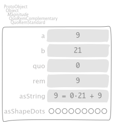
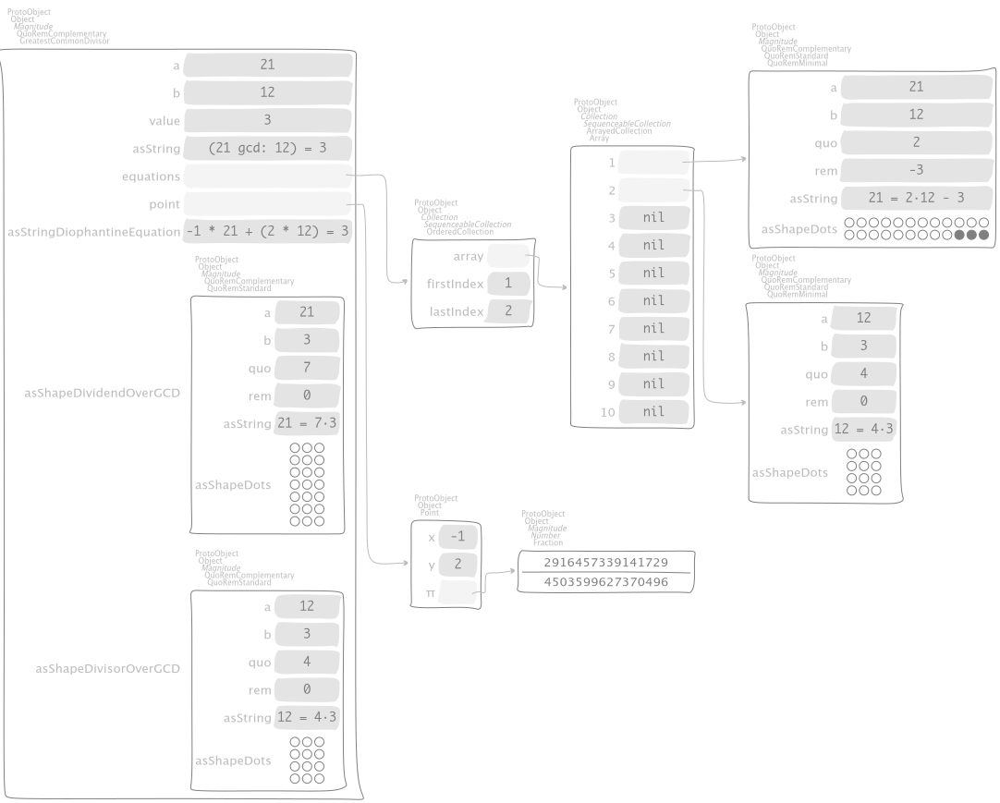
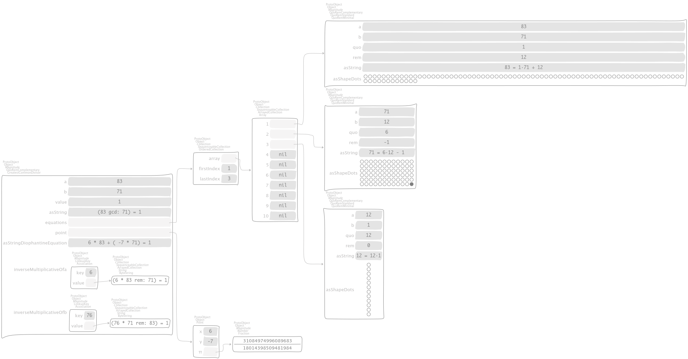

Divisibility¶
Quotients and remainders¶
Lets divide \(20\) by \(9\),
"SymbolicIntegerTest, protocol tests"
testStandardQuoRem21Over9
| quoRem |
quoRem := 21 /% 9.
self assert: quoRem value equals: 21 / 9.
^ self exportSlotsGraphOf: quoRem

by means of the binary message
"Integer, protocol *Containers-Essentials"
/% anObject
^ anObject quoRemInteger: self
that dispatches
"Integer, protocol *Containers-Essentials"
quoRemInteger: anInteger
^ QuoRemStandard a: anInteger b: self
which instantiate a symbolic Magnitude object via the class-side message
"QuoRemComplementary class, protocol as yet unclassified"
a: a b: b
^ self basicNew
a: a;
b: b;
initialize;
yourself
where both the quotient and the remainder are computed in the overridden
"QuoRemStandard, protocol accessing"
initialize
super initialize.
quo := self value floor.
rem := a - (quo * b)
as the usual computation does and the assertion checks in the initial test case.
The same division can be carried out by
"SymbolicIntegerTest, protocol tests"
testComplementaryQuoRem21Over9
| quoRem |
quoRem := 21 /%~ 9.
self assert: quoRem value equals: 21 / 9.
^ self exportSlotsGraphOf: quoRem

that yields a negative remainder, shown by full dots. To do that, we have the following messages chain
"Integer, protocol *Containers-Essentials"
/%~ anObject
^ anObject quoRemComplementaryInteger: self
that dispatches
"Integer, protocol *Containers-Essentials"
quoRemComplementaryInteger: anInteger
^ QuoRemComplementary a: anInteger b: self
which instantiate a symbolic Magnitude object of class
Magnitude subclass: #QuoRemComplementary
instanceVariableNames: 'a b ratio quo rem'
classVariableNames: ''
package: 'Containers-Essentials'
Both the quotient and the remainder are computed in the initialization message
"QuoRemComplementary, protocol accessing"
initialize
ratio := a / b.
quo := self value ceiling.
rem := a - (quo * b)
The latter representation is uniform in the sense that it yields a rectangle of dots
that are stacked horizontally, where the number of rows equals the quotient of the division
while the number of columns equals the divisor denoted by the instance variable b.
"SymbolicIntegerTest, protocol tests"
testComplementaryQuoRem9Over21
| quoRem |
quoRem := 9 /%~ 21.
self assert: quoRem value equals: 9 / 21.
^ self exportSlotsGraphOf: quoRem

"SymbolicIntegerTest, protocol tests"
testQuoRem9Over21
| quoRem |
quoRem := 9 /% 21.
self assert: quoRem value equals: 9 / 21.
^ self exportSlotsGraphOf: quoRem

"SymbolicIntegerTest, protocol tests"
testQuoRemMinimal9Over21
| quoRem |
quoRem := 9 /%< 21.
self assert: quoRem value equals: 9 / 21.
^ self exportSlotsGraphOf: quoRem

Greatest Common Divisor¶
"SymbolicIntegerTest, protocol tests"
testGCDof9and21
| quoRem |
quoRem := 9 >|< 21.
self assert: quoRem value equals: (9 gcd: 21).
^ self exportSlotsGraphOf: quoRem

"SymbolicIntegerTest, protocol tests"
testGCDof12and21
| quoRem |
quoRem := 12 >|< 21.
self assert: quoRem value equals: (12 gcd: 21).
^ self exportSlotsGraphOf: quoRem

Diophantine equations¶
Coprimes¶
"SymbolicIntegerTest, protocol tests"
testGCDof83and71
| quoRem |
quoRem := 83 >|< 71.
self assert: quoRem value equals: (83 gcd: 71).
^ self exportSlotsGraphOf: quoRem

\(\mathbb{Z}_{17}\) field¶
"SymbolicIntegerTest, protocol tests"
testGCDofZ17
| field prime interval |
prime := 17.
interval := 1 to: prime - 1.
field := interval collect: [ :each | each >|< prime ].
self
assert: (field collect: #value)
equals: (interval collect: [ :each | prime gcd: each ]).
^ self exportSlotsGraphOf: field

"SymbolicIntegerTest, protocol tests"
testGCDofMultiplicativeInversesInZ17
| gcds inverses |
gcds := self testGCDofZ17.
inverses := PointArray new: gcds size + 1.
gcds withIndexDo: [ :each :index |
inverses at: index put: each b @ each inverseMultiplicativeOfb key ].
inverses at: inverses size put: 0 @ 0.
^ self exportSlotsGraphOf: inverses

\(GCD(F_{n}, F_{n+1})\), where \(F_{n}\) is the \(n\)-th Fibonacci number¶
"SymbolicIntegerTest, protocol tests"
testGCDofAdjacentFibonacciNumbers
| fibs gcds |
fibs := OrderedCollection with: 1 with: 1.
3 to: 11 do: [ :i | fibs add: (fibs at: i - 2) + (fibs at: i - 1) ].
gcds := fibs
with: fibs allButFirst , { (fibs lastButOne + fibs last) }
collect: [ :r :s | r >|< s ].
self
assert: (gcds collect: #value)
equals: (gcds collect: [ :each | 1 ]).
^ self exportSlotsGraphOf: gcds

Kissing Fractions¶
Consider the Fraction
"EssentialsObjectTest, protocol tests"
testInspectFractionForKisses
^ self exportSlotsGraphOf: 4 / 17

which kisses other fractions, by tangents of Ford’s circles
"EssentialsObjectTest, protocol tests"
testInspectFractionKissing
| aFraction |
aFraction := self testInspectFractionForKisses.
self assert: aFraction kissingFractions equals: {
(1 / 5).
(2 / 9).
(3 / 13).
(4 / 17).
(1 / 4).
(1 / 3).
(1 / 2) }.
^ self exportShapeOf: aFraction accessorBlock: #asShapeFordCircles
where
"Fraction, protocol *Containers-Essentials"
kissingFractions
| kissedFractions vl |
kissedFractions := Set new.
vl := ValueLink new
value: self asFractionWrtFloor;
yourself.
[ vl ] whileNotNil: [
| gcd diophantinePoint next less aFraction |
aFraction := vl value.
kissedFractions add: aFraction.
gcd := aFraction numerator >|< aFraction denominator.
diophantinePoint := gcd point.
next := diophantinePoint x / diophantinePoint y negated.
less := aFraction numerator - next numerator
/ (aFraction denominator - next denominator).
vl := next kissingFractionLink:
(less kissingFractionLink: vl nextLink) ].
^ kissedFractions asArray
sort;
yourself
and the polymorphism on #kissingFractionLink: reads as follows
"Fraction, protocol *Containers-Essentials"
kissingFractionLink: aLink
^ self ~~> aLink
"Integer, protocol *Containers-Essentials"
kissingFractionLink: aLink
^ aLink
Moreover, consider the reciprocal
"EssentialsObjectTest, protocol tests"
testInspectFractionReciprocalKissing
| aFraction |
aFraction := self testInspectFractionKissing reciprocal.
self assert: aFraction kissingFractions equals: {
(1 / 4).
(1 / 3).
(1 / 2) }.
^ self exportShapeOf: aFraction accessorBlock: #asShapeFordCircles

which yields a simpler visualization.